App audit: interaction and hierarchy
This pass covers how the app behaves, not how it looks: affordances, states, feedback, keyboard, and whether the same thing works the same way in every panel. Other threads cover the homepage, the docs, and the app's product-level and pixel-level issues.
How it was checked. I read the app's code panel by panel and captured 76 screens and states with the harness. I then reproduced the worst bugs in the running fixture app: undo, keys leaking through menus, and the sidebar rename. Every finding below is backed by a capture or a reproduction, plus the file:line that causes it (finding 11 is backed by code only). Nothing already ticketed or rejected is repeated. That excludes the round 4 and 5 audits, #1169, the Workspace pills, and the in-body frame picker.
How to read it. Findings are ranked by how much they hurt someone using the app. Each one has the before (light and dark follow your theme), a mockup of the fix, and one recommendation that stays inside the current UX. No tickets are filed; pick the ones you want.
⌘Z doesn't undo anything on the canvas
The shortcut sheet lists Undo ⌘Z and Redo ⌘⇧Z, and the keyboard handler calls them, but they never restore anything. I deleted Checkout · desktop with Backspace, then pressed ⌘Z twice. The frame stayed gone for everyone. Moving, resizing, grouping and deleting all go through the same path, so none of them can be undone either.
Cause: useYjsHistory builds its UndoManager without trackedOrigins (lib/yjs/react.ts:111), so Yjs only records transactions whose origin is null. Every canvas op commits with CANVAS_OPS_ORIGIN (lib/canvas/ops.ts:358). A scratch Vitest reproduction shows the undo stack stays empty after two canvas-origin edits.
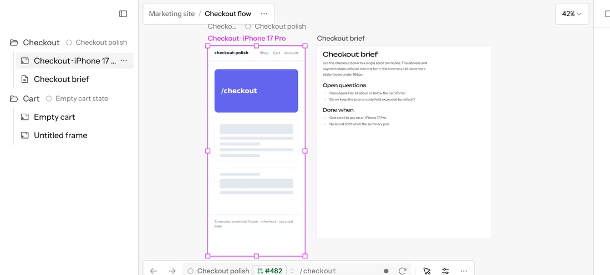

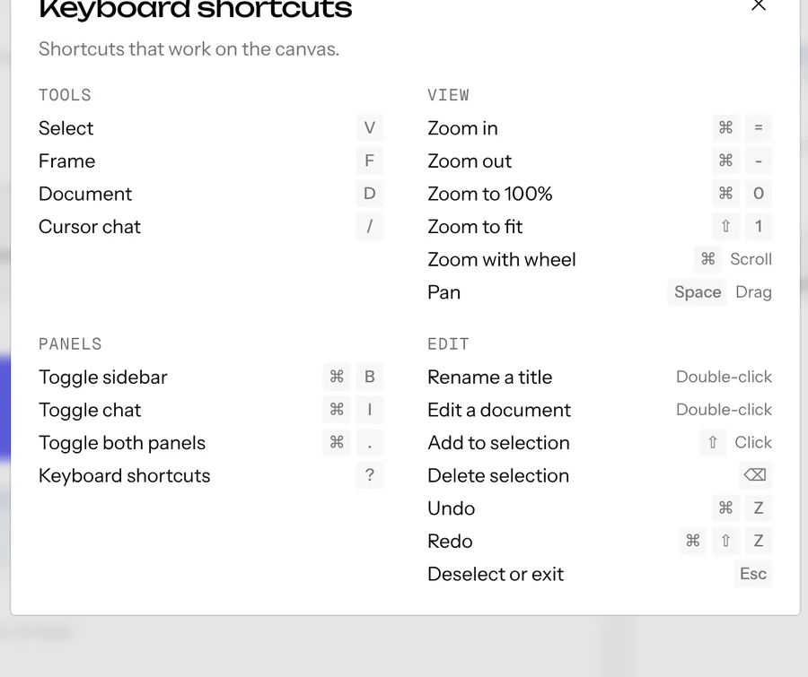
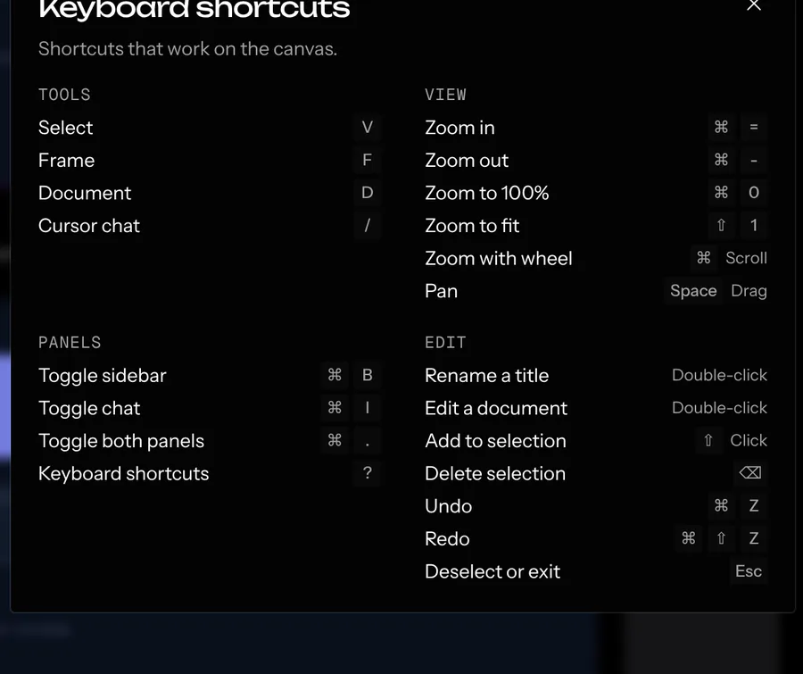
Pass trackedOrigins: new Set([CANVAS_OPS_ORIGIN]) to the UndoManager so ⌘Z and ⌘⇧Z work for every canvas edit. Then show the Undo toast when something is deleted from the canvas. The toast matters because the frame vanishes for everyone, and the person may not know ⌘Z exists. Finding 05 builds on this.
Canvas keys fire through open menus, dialogs and the composer
The canvas listens on the whole window and only ignores keys typed into inputs, textareas and contentEditable. It doesn't check whether a menu, popover or dialog has the key. I reproduced two of the cases below; the rest are in the code.
- Backspace with a menu open deletes the frame behind it. Reproduced: with the frame's … menu open, Backspace deleted Checkout · desktop (screenshot).
- Escape does two things. Reproduced: Escape closed the menu and also deselected the frame, so its toolbar disappeared. It does the same when it closes the zoom menu, a layer menu, a dialog or the ? sheet, and it can also exit Focus or Create Flow.
- Typing a menu's first letter switches tools. V, F, D and C typed to jump to a menu item also change the canvas tool.
- Space doesn't press buttons. Anywhere on the canvas page, including the Canvas settings and Share dialogs, Space on a focused button, switch or checkbox arms pan mode instead.
- Escape in the chat or Coordinator composer reaches the canvas. It clears the selection or exits Focus mode, and the composer itself ignores it.
use-canvas-keyboard.ts:83 (the typing check), :93 (Escape never checks defaultPrevented, which Radix sets when it closes a layer), :152–176 (tool keys), :236 (Space), :246 (Delete). composer.tsx:655 has no Escape case. Home already has the right check in isTypingOrInOverlay (home/use-create-canvas.ts:81), and frame-nav.tsx:582 works around it for one popover only.

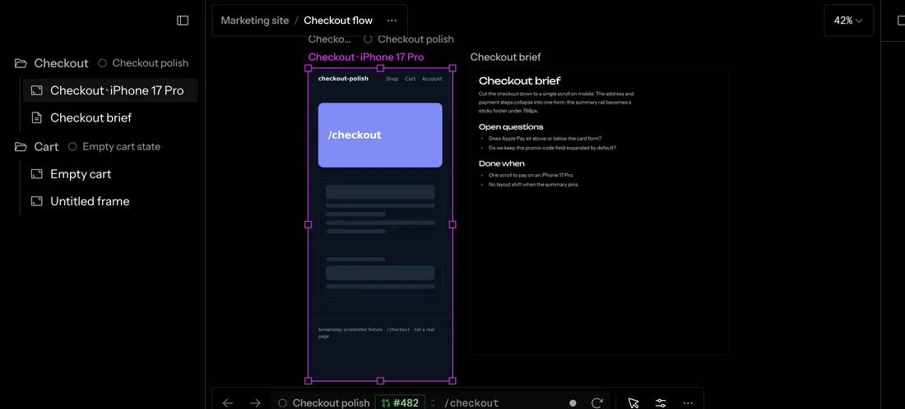
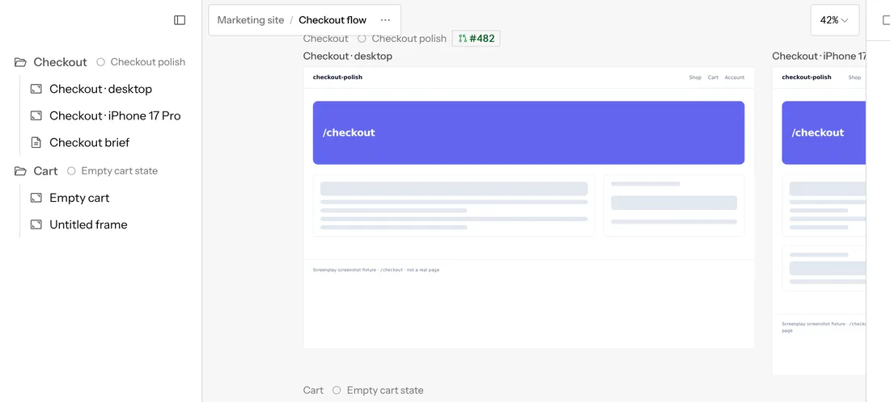

Use one guard at the top of the canvas handler. Return when e.defaultPrevented is set, and for every key except Escape, also return when the target is inside a menu, dialog or popover (reuse isTypingOrInOverlay). Only pan on Space when the target isn't interactive. In the composer, make Escape blur the editor and stop there. Then remove the frame-nav workaround.
Renaming in the sidebar drops every space
I renamed a frame from its sidebar menu and typed “Cart with coupon”. It came out as Cartwithcoupon. The row is a drag handle, and dnd-kit's keyboard sensor takes Space (and Enter) as “pick up” from any key that bubbles up from inside the row, the inline name field included. The same applies to documents and groups. On a focused row, Enter or Space starts a keyboard drag instead of selecting the row.
room-sidebar.tsx:224–251 spreads the drag listeners on the whole row, and EditableText only stops Escape and Enter. The Workspaces menu already fixed this for its own rename field (workspaces-menu.tsx:1072), and so did the Workspace status icon (workspace-status-icon.tsx:20).

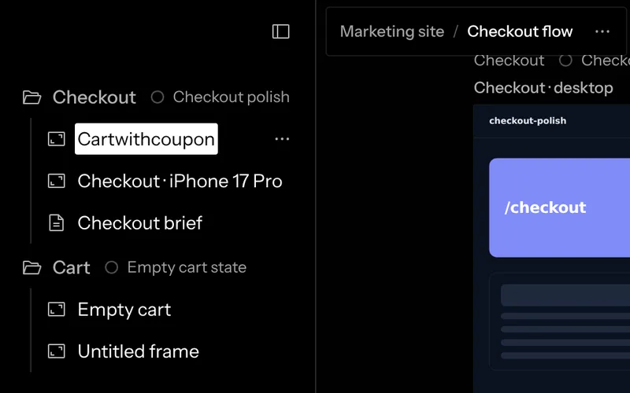
Stop key propagation from the editing field (the same onKeyDown stop the Workspaces menu uses), and give each row an activator node with setActivatorNodeRef so only keys on the row itself start a drag.
A Workspace waiting for plan approval looks idle everywhere except one row
When a Workspace's agent writes a plan and stops for approval, the Coordinator's task row says Needs you with an amber icon. Everywhere else it shows the idle circle: the sidebar group, the canvas group label, the Workspaces menu, and the Workspace's own chat header. The Workspaces button's “needs you” dot ignores it as well. So the one state that waits on the person is the one that's hardest to spot, unless they happen to be reading the Coordinator transcript.
“Needs you” has two definitions. The task row counts a pending plan (lib/agent/workspace-task.ts:246). The Workspaces menu's section and dot count only an error or an open PR (lib/workspace-list-view.ts:71–80). The shared state glyph has no waiting state at all (lib/branch/status-line.ts:62–82).

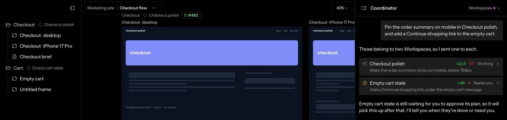
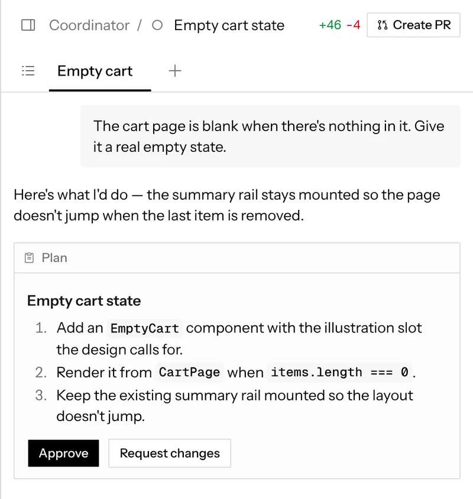
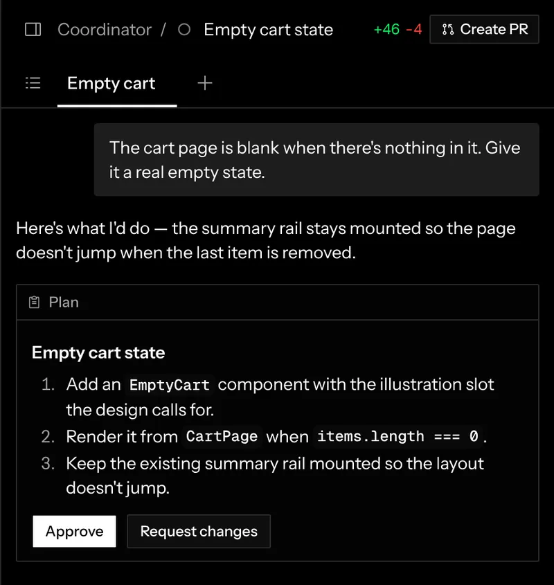
Add a “needs you” state to workspaceStatusLine when a plan is pending, drawn with the icon the task row already uses. Count it in workspaceSection, so the menu's Needs you section and the Workspaces dot agree with the task row. The glyph is already shared, so this is one change that shows up everywhere.
Deleting works four different ways
The same act, deleting something, behaves differently depending on where it starts:
- Confirm dialog: a frame, document or group deleted from the sidebar (“This cannot be undone”).
- Instant, no undo: the same frame deleted from its toolbar's “Delete frame” item or with the Delete key; a canvas memory entry (
canvas-memory-section.tsx:124). - Press twice: deleting a chat from History arms the button, then deletes (
chat-history-menu.tsx:83). - Toast with Undo: comments and home moves.

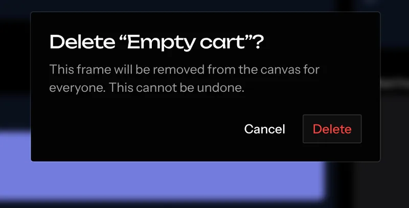
| What | After |
|---|---|
| Frame, document, group (any path) | Delete at once, toast with Undo |
| Canvas memory entry | Delete at once, toast with Undo |
| Chat in History | ConfirmDialog, like presets |
| Canvas, folder, Workspace, repository, preset | ConfirmDialog (unchanged) |
Once finding 01 makes undo work, delete canvas objects at once with an Undo toast from every path, and drop the sidebar's confirm. Keep ConfirmDialog for what undo can't restore, and switch chat deletion from press-twice to ConfirmDialog. Label the toolbar item “Delete”, as the sidebar does.
With a frame and a group selected, the toolbar acts on one frame
Shift-click a group while a frame is selected. Both show the selection colour, but the frame's address-bar toolbar stays under the first frame, and its Duplicate, Device size and Delete frame act only on that frame. Two frames selected hides the toolbar correctly; a group doesn't count toward that.
canvas-member-layer.tsx:331 and :472 count only selected frames and documents for multiSelected, so iframe-layer.tsx:523 still shows the single-frame toolbar.
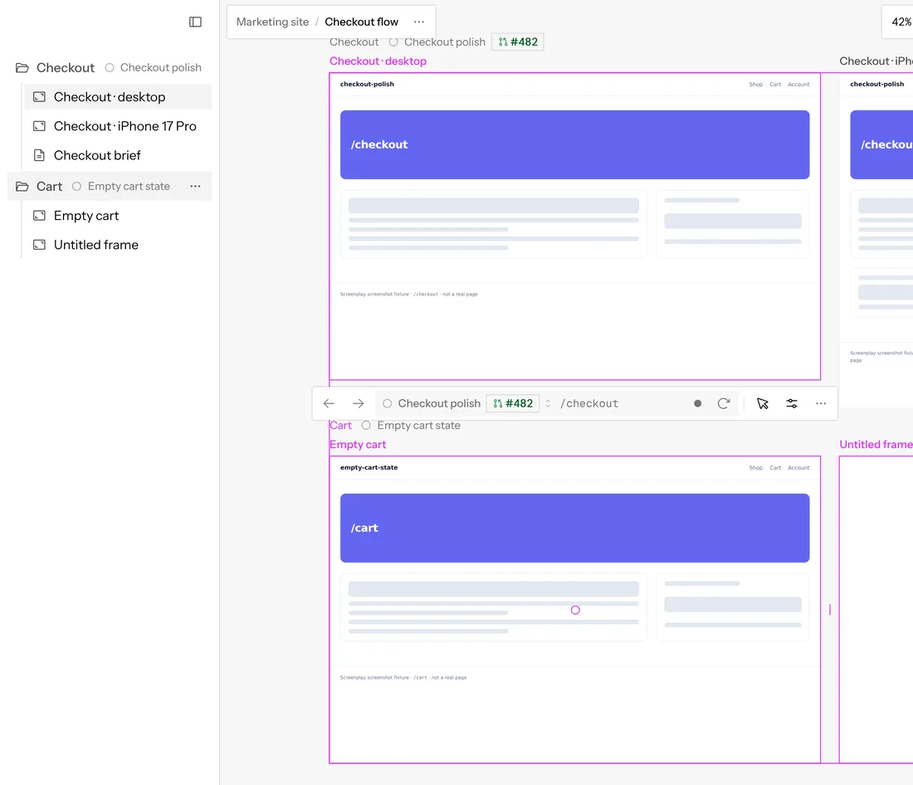

Include selected groups in the multiSelected count. It's a one-line change in both places.
One frame, two different menus
A frame's sidebar … menu has Rename, Delete. Its toolbar … menu has Device size, Fit to content, Duplicate, Workspace, Delete frame. You can't duplicate a frame from the sidebar or rename it from the toolbar, and the delete item has a different label and different behaviour in each (finding 05). Documents and groups have no menu on the canvas at all, so their Delete is only in the sidebar or on the Delete key.
layer-rows/iframe-layer-row.tsx:183–205 compared with iframe-layer.tsx:1046–1096. onDuplicate is wired for frames only (canvas-member-layer.tsx:462).

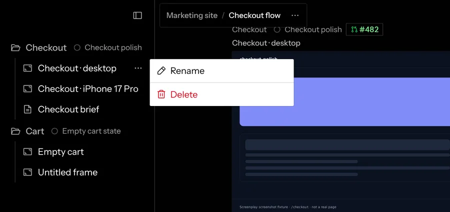


Pull the frame's items into one shared menu content and render it from the sidebar row and the toolbar. Do the same for documents and groups, and give a selected document or group the same … on its canvas label. Keep the order: edit, then view, then Delete last.
A Workspace's own chat can't restart, finish or delete it
Inside a Workspace chat, the header shows the Workspace's name with a hover card, its line counts and its PR. To Restart, Mark as done, Recreate or Delete it, you have to go back to the Coordinator, open Workspaces, hover the row and open its …. The frame toolbar's Workspace submenu only has Open prototype player and Open in browser. You're most likely to want these actions while you're in that Workspace's chat.
The header name is a hover card only (chat-panel.tsx:1389–1409). The Workspaces button is left out of Workspace chats on purpose (workspaces-menu.tsx:625), which is right; this adds only the row's own menu.
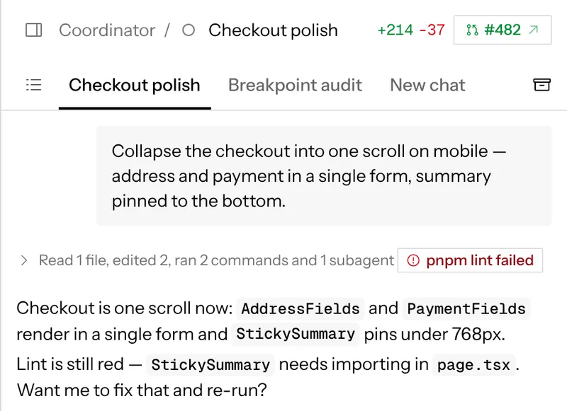
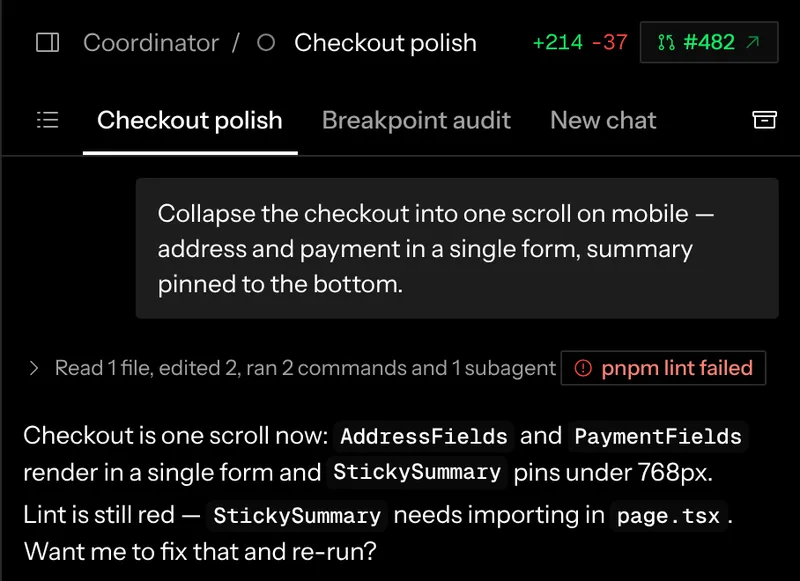
Render BranchOverflowMenuContent from a … icon button right after the Workspace name in the header. It uses the same items as the row, with no new actions.
A new canvas asks you to add a repository four times
On a fresh canvas, “Add repository” appears as:
- the filled button in Get started;
- a row in the canvas empty state;
- an outline button in the chat panel;
- an Add a repository item in the Workspaces menu.
That leaves nothing to show which one is the next step. The chat panel also swaps the Coordinator out entirely: its header becomes muted “No repositories” text, and there's no composer. So a canvas that only holds documents can't ask the Coordinator anything, even though its empty state says it “sees every Workspace, frame and Document”.
chat-panel-host.tsx:76 returns nothing when there are no repositories, which falls through to the placeholder at :168–197.

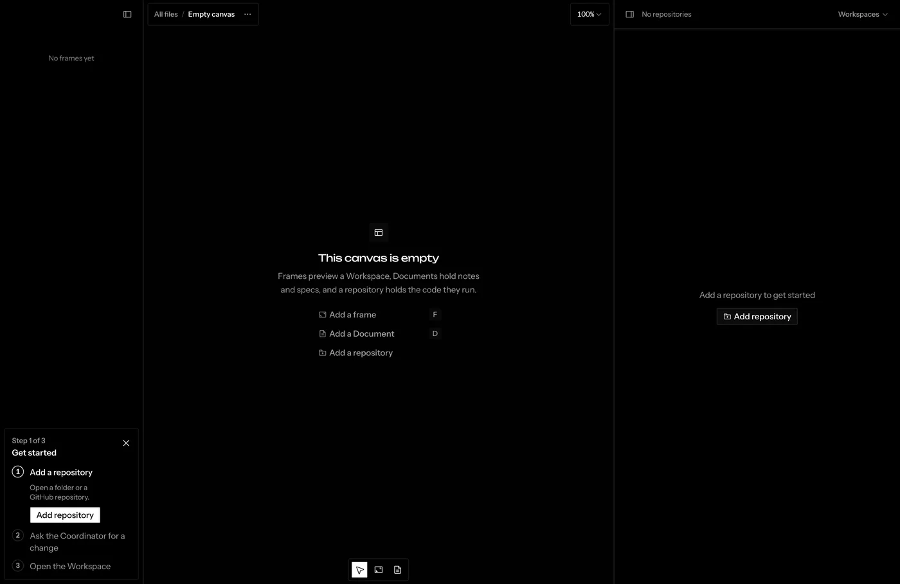


Always render RoomChatPanel. When there's no repository, its empty-state line says one can be added, with no button. Drop “Add a repository” from the canvas empty state while the Get started card is showing, so the card's filled button is the only call to action.
Errors show HTTP codes and URLs instead of what to do
Three chat-side errors pass the transport error straight through:
- “Failed to approve plan: HTTP 500”
- “Couldn't stream logs (HTTP 502).”, in mono red
- “The agent stopped responding: request to https://api.example.com/v1/sessions/4f9c…/prompt timed out after 120000ms”
The last one has no Retry, and the plan error sits under Approve without saying that pressing it again is the retry. The failed-send row (“Not sent: The agent couldn't be reached · Retry · Edit”) already shows the pattern to follow.

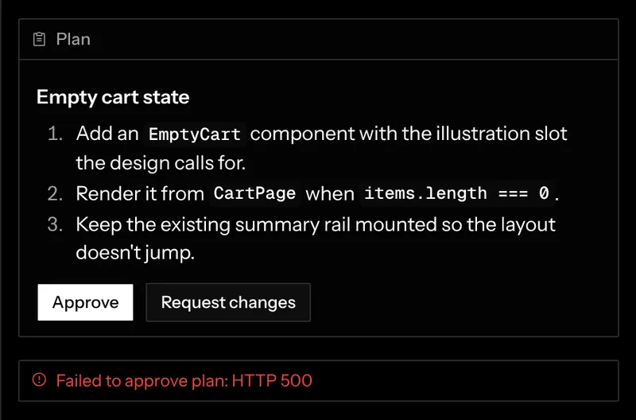


Map transport errors to one plain sentence plus a Retry in the same row, and keep the detail for Copy error. Use the UI font for the logs error; mono is for the log lines themselves.
A failed load looks like an empty state
Three loads swallow their errors and then render the “nothing here” state:
- Models. If the model list fails, the composer treats it as an empty catalogue. Send is disabled with the no-coding-agent message, Settings says “No coding agent installed yet”, and the New Workspace model menu stays on “Loading…”. The person is told to install something they already have.
- Chat history. If it fails, the chat shows the fresh-chat starters as if it had no messages.
- Comments. If they fail, the panel says “No comments yet. Press C to add one.”
agent-chat.tsx:264–277 (.catch(() => {}), then modelsLoaded = true); lib/chat-store.ts:296–302; app/[roomId]/page.tsx:74 (listThreads(...).catch(() => [])).
Track a failed state next to each loaded flag (modelsFailed, historyError, threadsFailed) and render a Retry instead of the empty copy. Settings already does this with LoadErrorRow, so the components exist.
Closing a terminal tab stops what's running; closing a chat tab doesn't
Chat tabs and terminal tabs share the strip and the same ×. On a chat tab, × moves the chat to History, where you can reopen it. On a terminal tab, × deletes the tab and kills its tmux session, including a Claude Code or Codex run in progress, and it can't be reopened. Terminals are used as chats when running a harness, so this is the tab most likely to hold a long-running agent.
use-tab-pool.ts:242–257 (delete, then killTerminalSessionAction). Both tabs render the same close button (chat-panel.tsx:1161–1172).
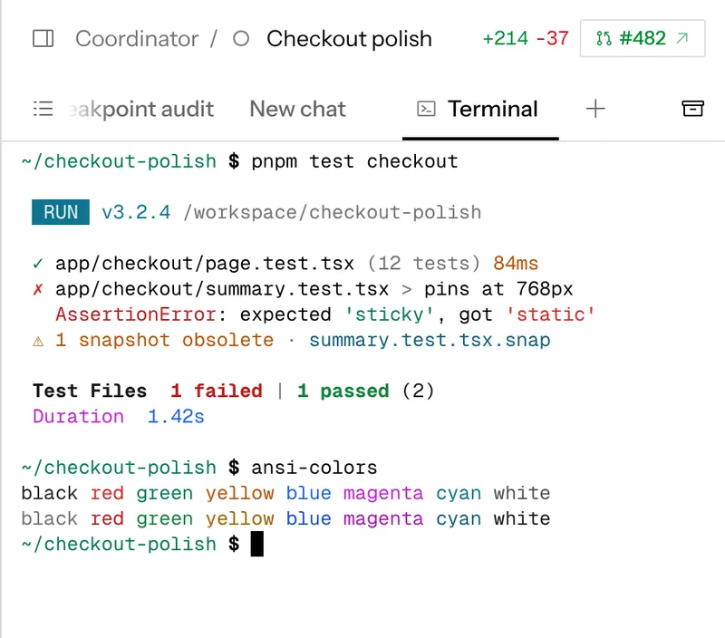

Close “claude”?
Claude Code is still running in this terminal. Closing it stops the run.
Confirm before closing a terminal whose session is running a process, using ConfirmDialog with the plain verb “Close”. A cheaper alternative with the same effect: when a harness is running, the × on a terminal tab reads “Stop and close” in its tooltip.
Mark as done makes frames vanish with no word and no undo
Mark as done hides the Workspace's frames from the canvas for everyone and stops its dev server. Nothing confirms it happened or says where the frames went. Reopen exists, but only in the collapsed Done section of the Workspaces menu. Comment deletes and home moves both show a toast with Undo in this situation.
branch-overflow-menu.tsx:405–412, then lib/branch/recovery.ts:286–300. No toast is shown on this path.

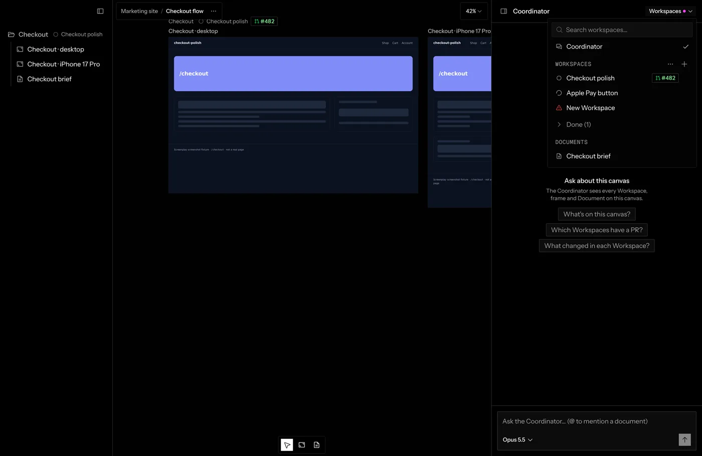
Show toast.success with an Undo action wired to branchActions.reopen(id).
Create PR: two names, a hidden reason, no progress
- Two names. The header button says “Create PR” and the Workspace menu says “Create pull request”.
- Hidden reason. When the button is disabled, the reason (“Agent is working in this workspace…”) is only in a native
title, which is slow to appear and unstyled. The + button next to it shows its reason in a real tooltip. - No progress. While the PR is being created, the button disables but its label doesn't change and there's no spinner. From the menu there's no feedback at all, and a second click starts a second create.
chat-panel.tsx:1007–1027; branch-overflow-menu.tsx:372–378, then use-branch-actions.ts:178–196 (no pending guard).

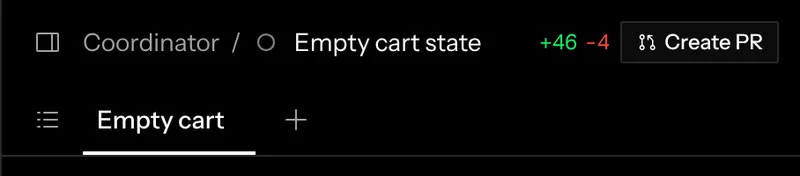
Keep one pending set in useBranchActions so the header and the menu share it. Show the spinner and “Creating PR…” while it runs, and disable the menu item. Put the disabled reason in the IconButton-style hint.
The Coordinator's PR card shows git branch names
The confirm card for opening a pull request reads “From empty-cart-state into main, +46 −4”. That breaks the rule that git branches never appear in the UI. The Workspace name is already in the title, so the line only needs the repository and the size of the change.
lib/agent/room-tools.ts:689.
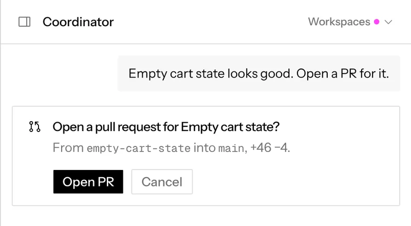

Change the description to “On {repo}, {lines}.” The branch stays in the Workspace hover card, where it already is.
⌘B in a document also collapses the sidebar
The panel shortcuts disagree about text fields:
- ⌘B doesn't check for typing. In a document it makes the text bold and also collapses the sidebar. ⌘. doesn't check either.
- ⌘I does check, so it can't close the chat from the composer. It italicises the draft instead, even though chat is sent as plain text.
- Ctrl. All three check only
metaKey, so on Windows and Linux in the browser Ctrl doesn't work, while undo and zoom accept either key.
use-canvas-keyboard.ts:191, :199–205, :214–219; composer.tsx:565–577 keeps StarterKit's bold and italic.


| Key | In a document | In the composer | Elsewhere |
|---|---|---|---|
| ⌘B | Bold only | Nothing | Toggle sidebar |
| ⌘I | Italic only | Toggle chat | Toggle chat |
| ⌘. | Nothing | Nothing | Toggle both panels |
⌘ means ⌘ on Mac and Ctrl elsewhere.
Skip ⌘B and ⌘. while editing text. Let ⌘I through when focus is in the chat panel, and turn off bold and italic in the composer's StarterKit. Accept metaKey || ctrlKey for all three, as undo already does.
Frame status screens shrink with zoom
A frame's status screen is drawn inside the frame, so it scales with the canvas. This covers No Workspace, Booting sandbox, Starting dev server, and Workspace failed to start with its Retry and Open logs buttons. At 42% the title is about 5px and the description can't be read. The buttons you need when a Workspace fails are 10px targets. Frame labels already stay at screen size, and this is the one piece of text on the canvas you most need to read.
frame-status/frame-status.tsx is rendered in the iframe layer's scaled content (iframe-layer.tsx:1187).
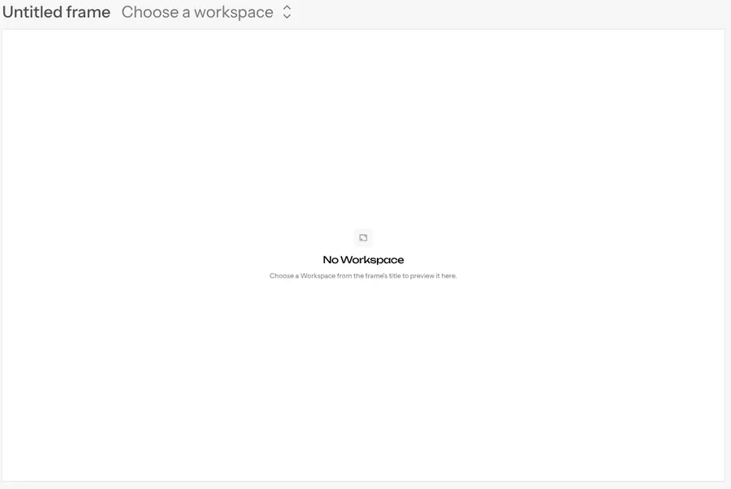
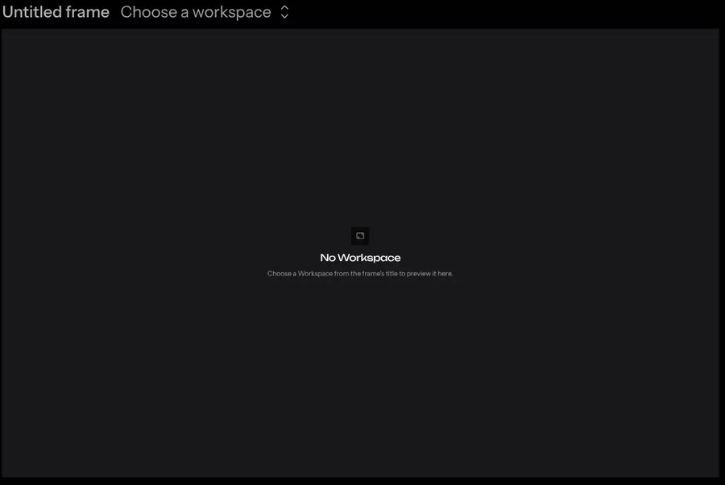
Counter-scale the FrameStatus block by 1/zoom, capped to the frame's size, the way the labels stay at screen size. The layout and the Empty component stay as they are. This isn't the rejected in-body picker (#798); it only changes the scale.
The same things are named differently
Small inconsistencies, visible side by side on one screen:

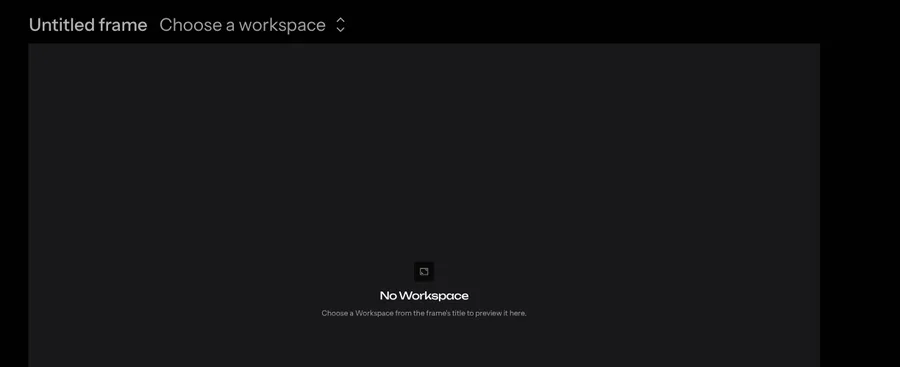
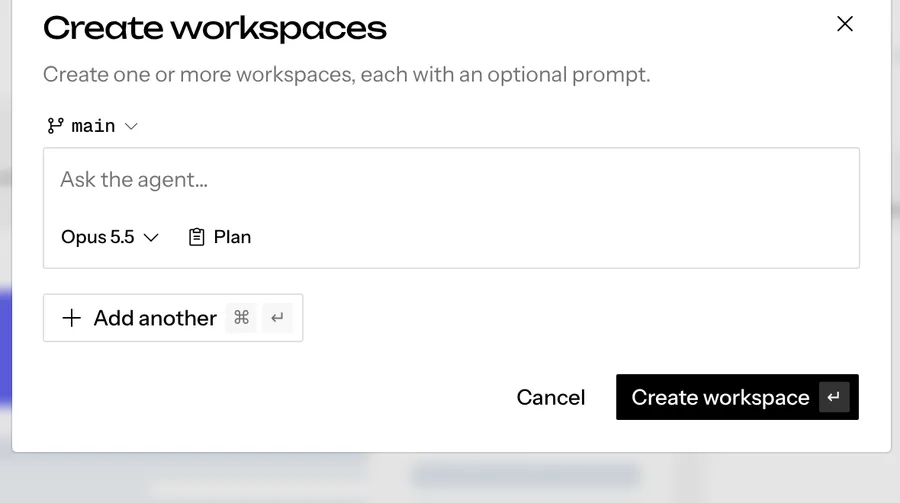

| Where | Now | Suggest |
|---|---|---|
| Frame and group label, frame status | Choose a workspace / Choose a Workspace | Choose a Workspace |
| New Workspace dialog | Create workspaces · Create workspace | Create Workspaces · Create Workspace |
| Canvas empty state | Add a frame · Add a Document | Add a frame · Add a document (or capitalise both) |
| Composer placeholders | Ask the agent… (@ document, / skill) · Ask the Coordinator… (@ to mention a document) | Ask the agent… (@ document, / skill) · Ask the Coordinator… (@ document) |
| PR action | Create PR · Create pull request | Create PR |
| Workspace removal | Remove Workspace (agent tool row, confirm card) · Delete (menu, dialog) | Delete |
| Home header | Add folder button opens “New folder” | New folder |
| Settings | Default agent (desktop) · Default model (hosted) · Change model (tooltip) | Default model |
| Menu items that open a dialog | Move to… and Rename branch… have “…”; Rename, Share, Settings and Open existing git branch don't | Add “…” to every item that asks for more input |
| Icon-button names | Canvas actions (home) · Canvas options (canvas) · Folder actions · More (frame toolbar) | “{Noun} options” everywhere |
Do one copy pass. The product nouns (Workspace, Canvas, Coordinator) are capitalised in running text, so apply that everywhere. A casing rule could go into the existing lib/ui-copy lint so it holds.
Smaller issues found in code
Each of these was checked in the code but not captured, because the fixture build can't show it or it's too small to need a mockup. Each has a one-line fix.
| Issue | Where | Fix |
|---|---|---|
| Collaborators see the filled Share button and can double-click the canvas title, but both fail for non-owners. The rename fails silently and snaps back. | canvas.tsx:2127, canvas-top-bar.tsx:148, canvas.tsx:328 | Gate both on isOwner, as the menus already do, and toast a failed rename. |
| No object has a right-click menu. Canvas tiles, frames, rows and tabs do nothing on right-click. | No onContextMenu in the app | A question for you: add stock shadcn context-menu and render the existing menus in it (Figma and Finder conventions). |
| Focus falls to the page body after closing a tab, deleting a row from its menu, or closing the frame's Workspace picker. | chat-panel.tsx:1175, iframe-layer-row.tsx:199, frame-nav.tsx:355 | Focus the neighbouring tab or row; drop the preventDefault on close. |
| A comment thread card can't be reached with Tab; focus stays on the pin. | comments.tsx:675 | Focus the card container (tabIndex -1), as ConfirmDialog does. |
| Esc doesn't close the canvas Comments panel unless focus is inside it. The player's panels close from anywhere. | comments-panel.tsx:303 | Use the player-hud.tsx:229 pattern. |
| Escape while renaming in the Workspaces menu closes the whole menu. | workspaces-menu.tsx:641 | Add onEscapeKeyDown as in move-to-dialog.tsx:113. |
| The player's Collapse chat tooltip says ⌘I, but the player doesn't handle it. | player-chat-host.tsx:190 | Handle ⌘I or drop the hint there. |
| Inline titles are Tab stops that no key activates. Chat tabs can't be renamed from the keyboard. | editable-text.tsx:338 | Enter or F2 starts editing; tabIndex -1 when nested in a focusable row. |
| Rename and New folder dialogs can be closed mid-request, and Save stays enabled when the name is empty or unchanged. | input-dialog.tsx:91–131 | Follow ConfirmDialog: spinner, disabled Cancel, no close while submitting. |
| Setup's disabled Finish explains itself only to screen readers. | local-setup-gate.tsx:172–186 | Show the reason as the muted line under the button. |
| Install and Sign in on coding agents fail silently. | agent-step.tsx:93, harness-setup-panel.tsx:110 | Catch and show an inline error line. |
| The home grid and the Share people list show a spinner and “Loading…” while comparable panels use skeletons. | rooms-view.tsx:190, share-room-dialog.tsx:147 | Use skeleton tiles and rows. |
| Empty-search wording varies: “No matches.”, “No matches”, “No workspaces found.”, “No routes yet.” | Command lists | “No matches” plus a reason where there is one (“Routes appear once you browse the page”). |
| The ? sheet leaves out ⌘E (target an element) and ⌘↵ (post a comment). | lib/canvas/shortcuts.ts | Add both rows. |
Checked and consistent: the regular spinner and the 9-dot spinner are used correctly throughout; comment resolve and delete undo; canvas, folder, Workspace, repository and preset deletes (ConfirmDialog with pending and error states); the canvas route's error and not-found pages; frame status Retry, Start and Open logs; the home load error; the Settings load rows; chat's failed-send Retry and Edit.
Checked and dropped: the code suggested that rename dialogs in folder views also lose Space and Enter to the tile's drag handle. It didn't reproduce: the dialog takes spaces and Enter saves.